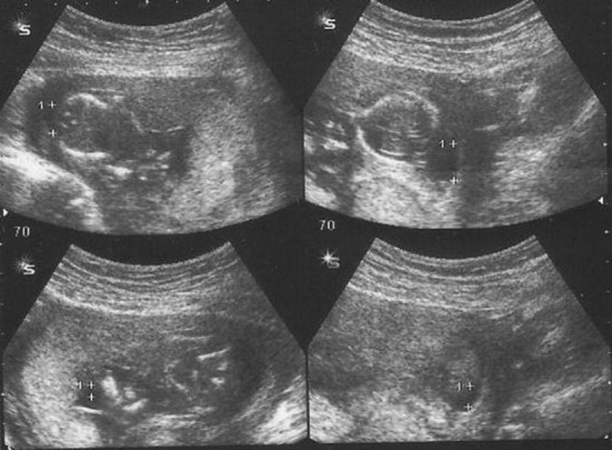

Página 8 · Sofrimento fetal crônico
Oligodrâmnio: o critério objetivo e a pegadinha do ILA
Como se diagnostica oligodrâmnio
Como se diagnostica oligodrâmnio. A suspeita nasce de um fundo menor que o esperado, mas o diagnóstico é da ultrassonografia. E ele é objetivo — tem número.
O critério: ILA abaixo de 5 ou maior bolsão abaixo de 2
O critério: ILA < 5 ou maior bolsão < 2. Oligodrâmnio é índice de líquido amniótico (ILA) menor que 5 cm OU maior bolsão menor que 2 cm — as duas formas valem. Basta uma delas.
Tem de ser matemático, não visual
Tem de ser matemático, não visual. O diagnóstico precisa ser medido: a avaliação subjetiva (“parece pouco líquido”) não deve mais ser usada. Olho não fecha oligodrâmnio; número fecha.
Interativo: acione os quadrantes e veja o somatório.
O diagnóstico é matemático, não visual: soma-se o líquido dos quatro quadrantes. Faixas < 5 oligo · 5–8 diminuído · 8–18 normal. Uma soma de 6 cai em “líquido diminuído” — a pegadinha ganha corpo.O ILA é a soma dos 4 quadrantes
O ILA é a soma dos 4 quadrantes. O ILA é o somatório da medida de líquido dos quatro quadrantes do útero. Uma consequência prática: se o maior bolsão não chega a 2 cm, dificilmente o somatório dos quatro chega a 5 — os dois critérios conversam.
As faixas do ILA
As faixas do ILA. Guarde as faixas: menor que 5 = oligodrâmnio; de 5 a 8 = líquido diminuído (ainda não é oligodrâmnio); de 8 a 18 = normal. O ILA normal varia com a idade gestacional (há tabela), mas 8–18 é a regra geral de prova.
A pegadinha da USP (ILA 6)
A pegadinha da USP (ILA 6). ⚠️ Agora a armadilha clássica. Um ILA de 6 não é oligodrâmnio, mas também não é normal — o gabarito é “líquido diminuído”. Já caiu exatamente assim numa prova da USP Capital: ILA de 6 → gabarito “líquido diminuído”. Quem decorou só “< 5 = oligo / resto = normal” marcou errado dos dois lados.
O único corte duro e universal é < 5 = oligodrâmnio. A banda “5–8 diminuído / 8–18 normal” é a convenção de prova (e sustenta a pegadinha USP). A referência ecográfica da FEBRASGO adota faixa normal ampla (5,1–25 cm; grave < 3). Para a prova, use a banda; conheça a faixa ampla.

O útero é dividido em quatro quadrantes e mede-se, em cada um, o maior bolsão vertical livre de partes fetais e cordão. Oligodrâmnio não é “pouca área preta” subjetiva: ancora-se no ILA baixo (< 5 cm) ou no maior bolsão < 2 cm.
Dharmraj M, Gaur S. Journal of Clinical Neonatology (via PMC/NCBI) · fonte / licença: CC BY-NC-SA 3.0
Calculadora de ILA · some os 4 quadrantes
Âncora: 1 + 2 + 1 + 2 = 6 → “líquido diminuído”. < 5 = oligodrâmnio · 5–8 = diminuído · 8–18 = normal.
Quiz — fixação
Gestante com ILA de 6 cm. Classificação?
- Gabarito B. 6 cai na banda 5–8 = líquido diminuído (a pegadinha da USP).
- A oligodrâmnio exige ILA < 5 — 6 não cruza esse corte.
- C normal começa em 8 — 6 ainda está abaixo.
- D polidrâmnio é líquido aumentado (> 18–25), o extremo oposto; o erro é tratar a escala como binária.
Qual afirmação sobre o critério de oligodrâmnio está correta?
- Gabarito A. As duas formas valem, e o diagnóstico é matemático.
- B exclui o ILA, quando ambos os critérios são válidos.
- C avaliação subjetiva foi abandonada — número, não olho.
- D < 8 é “diminuído/normal” conforme a faixa; oligodrâmnio é < 5.